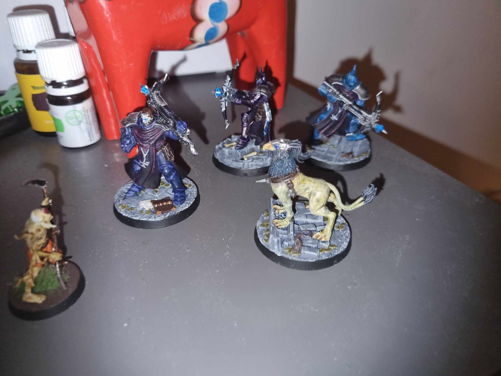
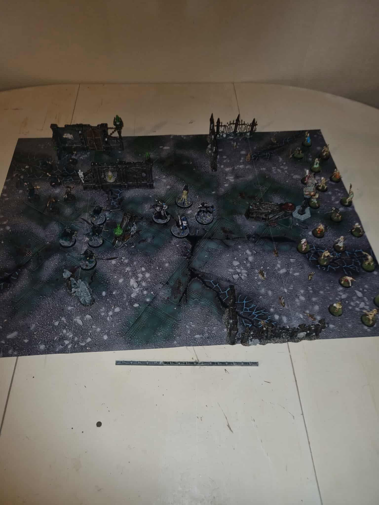
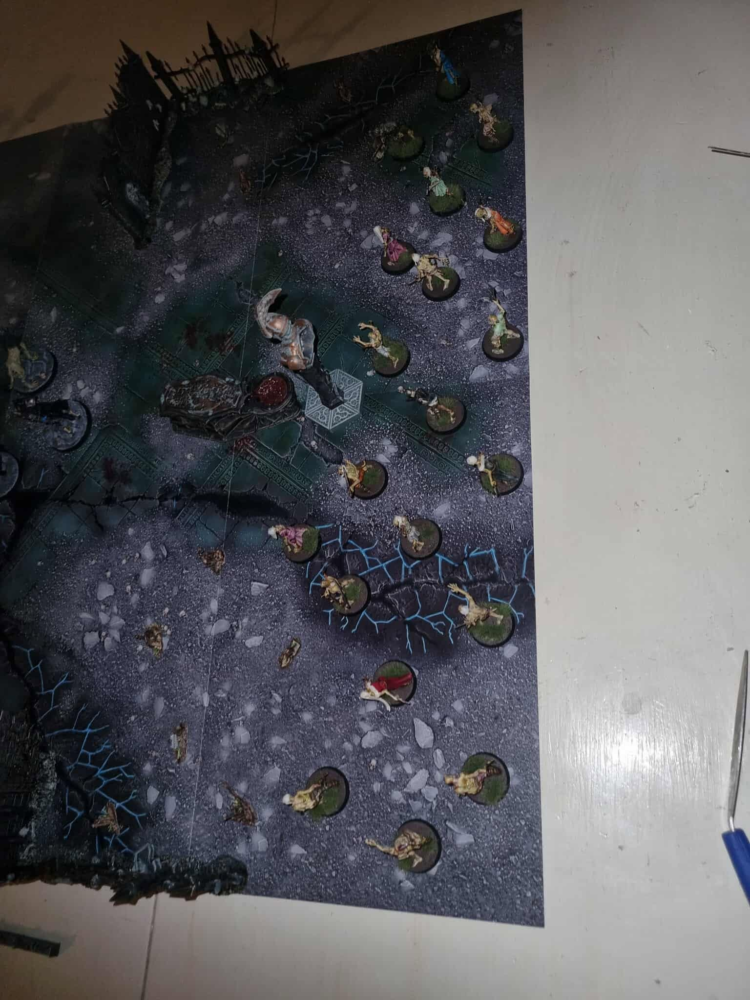
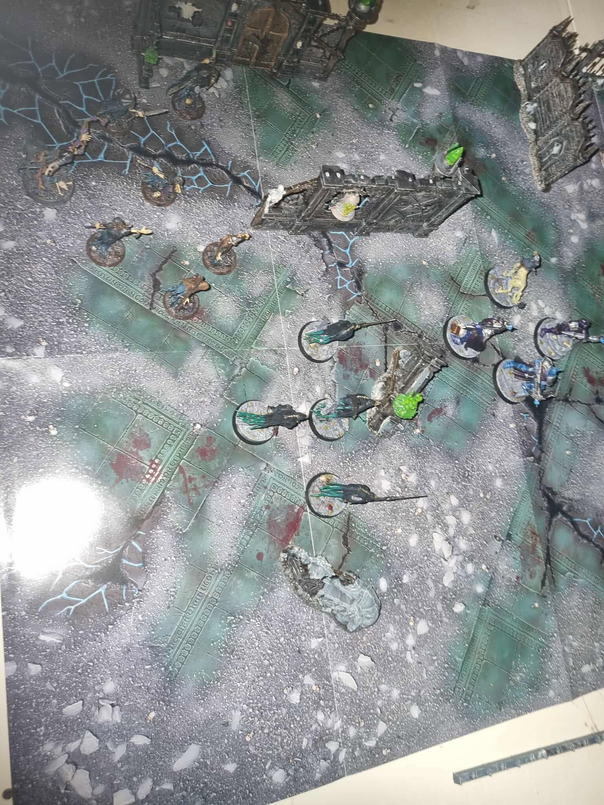

The miniature collection / Warbands
Warriors of the
Mortal Realms.
My Age of Sigmar warbands, one painted miniature at a time. Explore the models, the colours, and the ideas behind each collection.
The warbands
01 / Collection
Stormcast Eternals
Forged in lightning.
Painted in frost.
A warband with a darker soul: my Stormcast Eternals, painted to resemble the Death Knights of World of Warcraft.
Explore the warband ↗
Warhammer Underworlds
Drepur’s
Wraithcreepers.
My first Underworlds warband. Four spectral fighters, dark cloaks and ghostly turquoise details.
Explore the warband ↗On the tabletop
02 / Photographs




